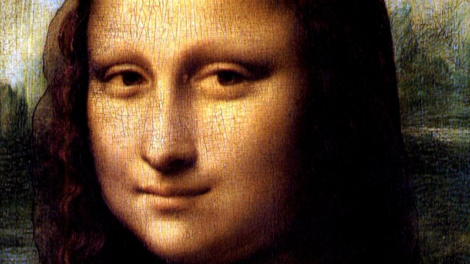

Leonardo da Vinci
The man who knew everything

Monalisa, da Vinci's most famoust painting
Here's a timeline of Leonardo da Vinci's life
- April 15, 1452 - Leonardo was born near Florence, in Italy. He was raised by his father.
- 1467 - Leonardo was very advanced in the fine arts. He was sent to apprentice under Andrea del Verrochio.
- 1472 - Leonardo's work was so well received and loved that he was asked to join the Painter's Guild of Florence.
- 1477 - While studying under Verrochio, they worked together to paint The Baptism of Christ. Leonardo's section is said to have outshined Verrochio's.
- 1482 - Leonardo was charged with a crime that he was later cleared from. He was so embarrassed that he moved from Florence to Milan.
- 1490 - Sometime during the 1490's da Vinci began keeping notebooks full of his philosophies and beliefs. Many of these notebooks can be seen today in various museums.
- 1495 - While working in Milan, Leonardo took on many projects. One of those was one of his most famous, The Last Supper.
- 1500 - Finally Leonardo returned home to Florence, where he continued his career in art.
- 1502 - Leonardo accepted a position travelling with the military troops in order to sketch out the land and draw maps. He returned to Florence in 1503.
- 1503 - The Mona Lisa.
- 1506 - Leonardo returned to Milan to work for the French governor there. He put a hold on his art to do architect work.
- 1513 - When the French were forced out of Milan, Leonardo left as well. He went to Rome where he lived for several years.
- 1516 - France's king, King Francis I, asked Leonardo to come paint for him. Leonardo travelled to France where he stayed the rest of his life.
- 1519 - While living in France Leonardo died. He was buried in France.
"I have been impressed with the urgency of doing. Knowing is not enough; we must apply. Being willing is not enough; we must do."
Leonardo da Vinci
If you have time, you should read more about this incredible human being on his Wikipedia entry